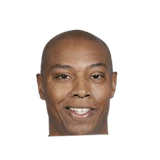

“This summer is a big summer for us. You hear our GM [general manager Ryan McDonough] come out and say he’s going to be super aggressive. We have young talent, we have a lot of picks, with a lot of money too. So I think there’s definitely going to be a lot of moves made this summer.”
What NBA players and coaches have said about Ryan McDonough
4 quotes about Ryan McDonough from 4 players, coaches and executives, newest first. Each one links to its original source.
Best quotes
During the Toucher & Rich show, Ainge explained how that deal came about.
“When we did the Isaiah Thomas trade, we said what we would do and dealing with my good friend (and former assistant GM for the Celtics) Ryan McDonough, he said ‘no, I need more in return’ which I understood. But we just weren’t willing to do more at that time. And a couple hours before the trade deadline, they came to our price and we got a deal.”
“So when I got the call, I was surprised. I thought Boston was interested myself. But then he (McDonough) explain it to me. 'Oh, you're in Phoenix?' I was happy either way, just to get the opportunity to go back to the NBA.”
What Ryan McDonough has said about other players and coaches →
Quotes per season
Who talks about Ryan McDonough most

Caron Butler1 quote Danny Ainge1 quote
Danny Ainge1 quote Devin Booker1 quote
Devin Booker1 quote Leandro Barbosa1 quote
Leandro Barbosa1 quote
2017-18
1 quote“This summer is a big summer for us. You hear our GM [general manager Ryan McDonough] come out and say he’s going to be super aggressive. We have young talent, we have a lot of picks, with a lot of money too. So I think there’s definitely going to be a lot of moves made this summer.”
2016-17
1 quoteDuring the Toucher & Rich show, Ainge explained how that deal came about.
“When we did the Isaiah Thomas trade, we said what we would do and dealing with my good friend (and former assistant GM for the Celtics) Ryan McDonough, he said ‘no, I need more in return’ which I understood. But we just weren’t willing to do more at that time. And a couple hours before the trade deadline, they came to our price and we got a deal.”
2013-14
2 quotes“So when I got the call, I was surprised. I thought Boston was interested myself. But then he (McDonough) explain it to me. 'Oh, you're in Phoenix?' I was happy either way, just to get the opportunity to go back to the NBA.”
Brett Pollakoff:Caron Butler, on Suns’ GM Ryan McDonough saying he’d been wanting to acquire him for a long time:
“It was rather flattering to find out that I had a guy that had a man crush on me,”